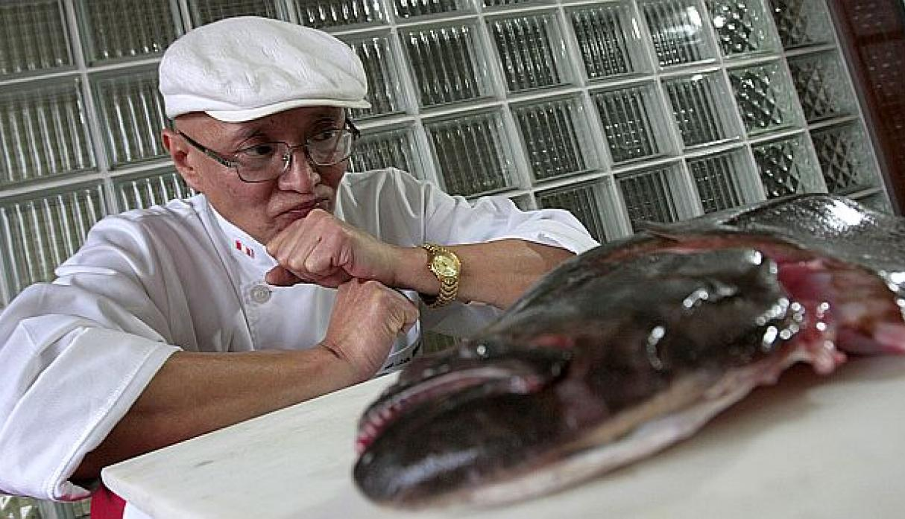

Javier Wong es un especialista en ceviche de lenguado y está considerado por muchos como el mejor. Hace homenaje a una cocina "de culto". Nació en 1949, es autodidacta y temperamental, descendiente de inmigrantes chinos. Javier nunca se planteó dedicarse a la cocina, pero diversas circunstancias lo llevaron a involucrarse en el mundo gastronómico. Es el dueño del restaurante Sankuay (Chez Wong), considerado como uno de los mejores y tradicionales de Perú, donde se produce un "derroche de sabores de casa" según los expertos. Su cocina está a la vista del cliente y el plato que más tiempo le lleva elaborar, se demora unos 10 minutos. Wong, se ha hecho famoso por cocinar según su imaginación en cada momento e intuir el gusto del comensal. En el 2011 escribió el libro "Javier Wong y el mejor ceviche del mundo". Ha sido reconocido como "Mejor cevichero del mundo" por una prestigiosa publicación inglesa.
